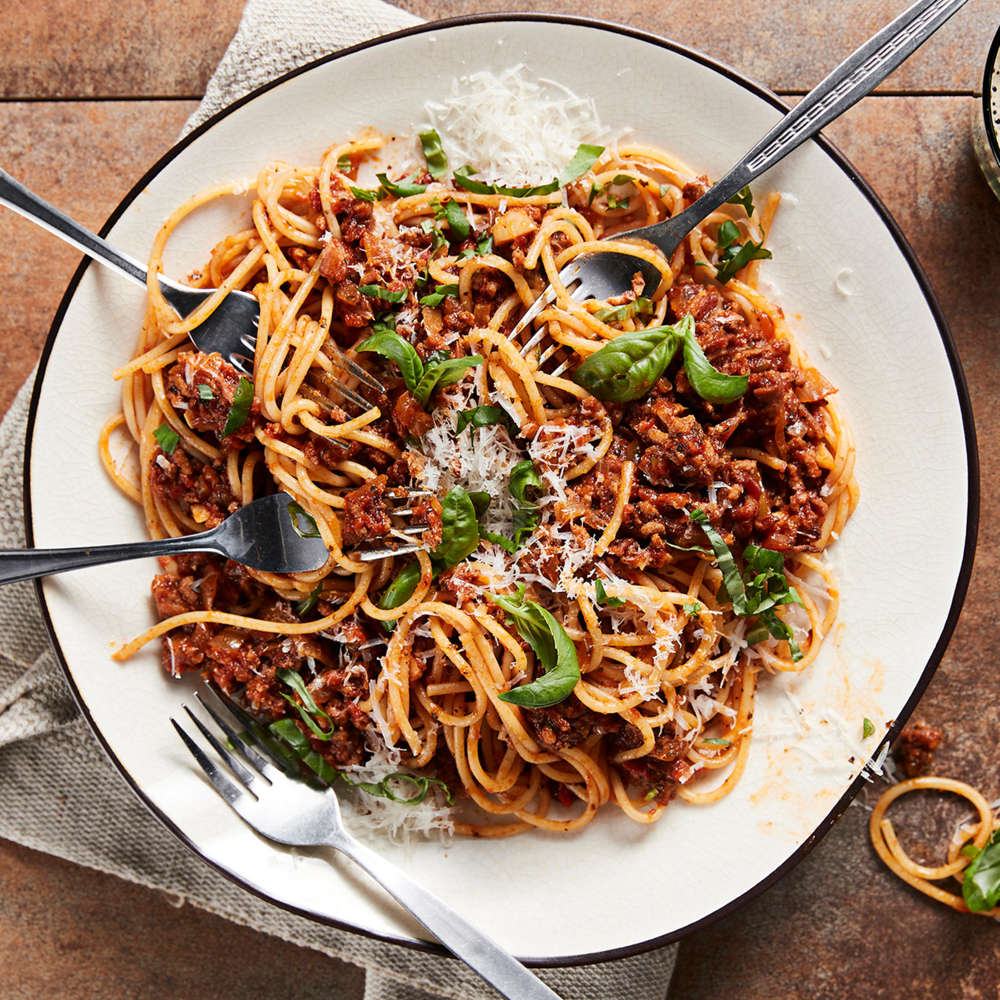

Pasta Bolognese
Home

Pasta Bolognese is probably from Italy, but this is not. It's easy to make though and still delicious!
Ingredients
Bolognese sauce
- 800 grams ground beef
- 2 stalks of celery
- 2 onions
- 3 carrots
- 4 cloves minced garlic
- 1 tablespoon olive oil
-
- 800g tomato pasta sauce (2 cans)
- 2 teaspoons salt
- paprika
- black pepper
- oregano
Served with pasta
- 80 to 100g of pasta for each enjoyer
Steps
- Chop celery, onions and carrots into evenly sized small chunks
- Brown the ground beef in a large pan, season with salt and black pepper
- Move beef from the pan and set aside
- Add olive oil and soften the chopped vegetables in the pan
- When vegetables are softened, add garlic and the spices, cook 1 more minute
- Add tomato pasta sauce and groud beef back to pan
- Let simmer and reduce until you are too hungry
- Serve Bolognese sauce with a healthy amount of pasta